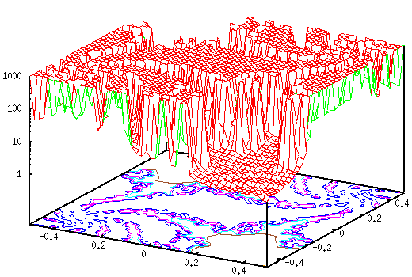
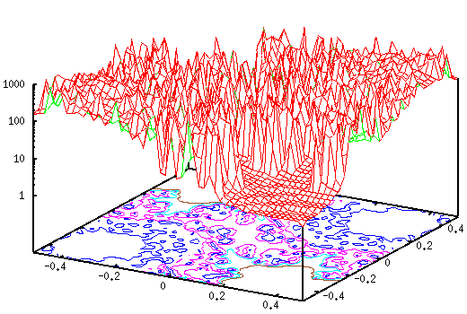
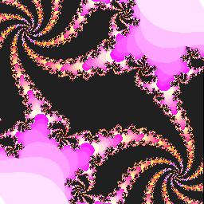

- not so Frequently Asked Questions -
update 2004/11/29
|
|
- not so Frequently Asked Questions - update 2004/11/29
|
Julia Set (Self-Squared Fractal)Same as the Mandelbrot set. We calculate the recurrence relation with a complex variable A, and look for a set of numbers with which the value of |z(n)|^2 does not diverge for a large number of n. The differences from the Mandelbrot set are that the initial value of the recurrence relation is the (x,y) coordinate on the complex plane, and the number of A is arbitrary.
z(0) = X + iY
z(n+1) = z(n)*z(n) + A
The function calculate the function above is just the same as our mandel function defined in the previous section. The complex value A is given outside the function, and the (X,Y) coordinate is used as the initial value. Here we employ A=-0.37-0.612 i. gnuplot> set xrange [-0.5:0.5] gnuplot> set yrange [-0.5:0.5] gnuplot> set logscale z gnuplot> set isosample 50 gnuplot> set hidden3d gnuplot> set contour gnuplot> a= -0.37 gnuplot> b= -0.612 gnuplot> splot mandel(a,b,complex(x,y),0) notitle

You can make a great variety of images by changing the complex constant A. In fact, a very small change in the constant result in a completely different picture. For example, the value of A was -0.37 -0.612 i in the figure above, but if you change the imaginary part into 0.6, you get:

 The following CGs of the self-squared fractal are made with the parameters above.


|